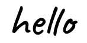

I'm Aarthi Muthukumar, a high school junior in the San Francisco East Bay.
I'm an aspiring medical
researcher and engineer, interested in finding the crossroads
between human-centered design, the arts, and the medical sciences.
this is a blank line